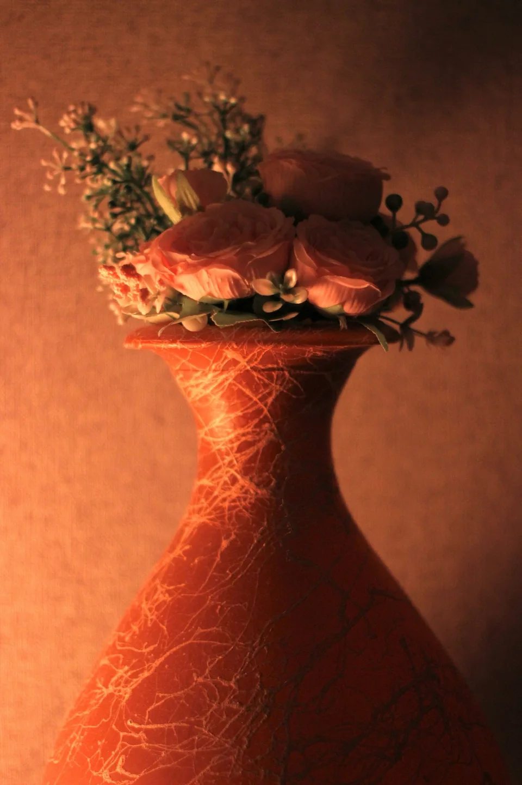
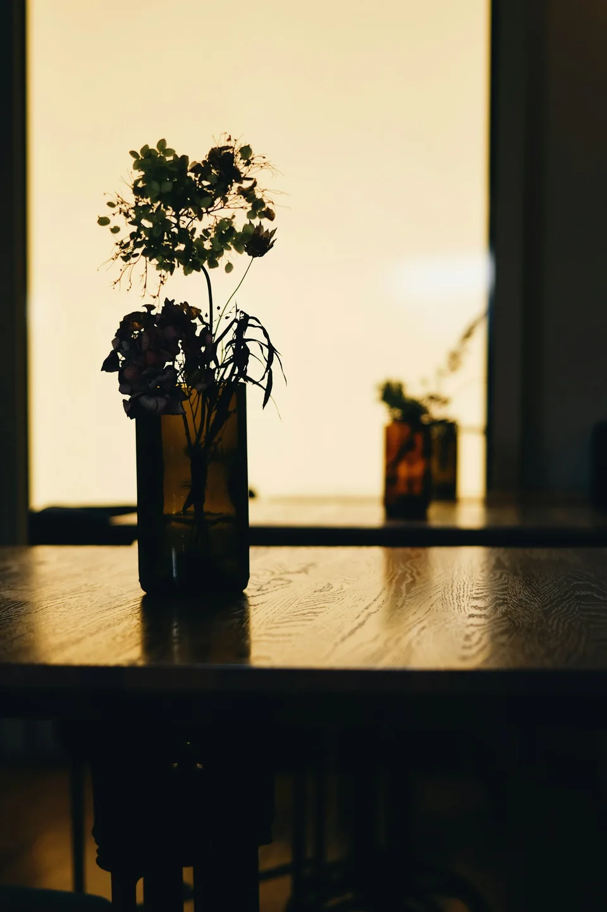

Floral design studio
Flowers with room to breathe.
A collection of floral arrangements for dinner tables, small gatherings, and the pleasure of bringing stems home.
See the arrangements
Flowers for the room
Choose a shape for the space and leave enough room for stems to fall naturally.

Kitchen stems
A loose handful of flowers for a narrow jug or a small vase.
The dinner table
Low arrangements that keep faces visible across the table.
A room in bloom
Taller stems and branches for an entryway or a corner that catches the light.